Feature design · UX research
One or two sentences summarizing the problem and what you designed. Keep it punchy — this is what hiring managers read first.
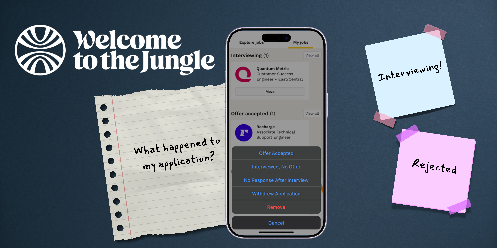
Welcome to the Jungle (formerly Otta) is a job search platform that helps users discover opportunities through personalized recommendations. In addition to saving jobs, users can track applications as they move through the hiring process.
WTTJ's job tracker treats application statuses as interchangeable labels instead of a hiring journey. As a result, users are presented with actions that don't match their current context, creating unnecessary decision making and inconsistent state transitions.
WTTJ's job tracker only supports active applications, leaving users without a way to document how a job search actually ends.
As an active job seeker, I used WTTJ for several months and relied on the tracker to organize dozens of applications. Over time, I noticed that once a company rejected or ghosted me, there was no way to preserve that information.
A friend who was also actively job searching expressed the same frustration, specifically wanting a way to track rejected applications to avoid losing context.
One app store review read
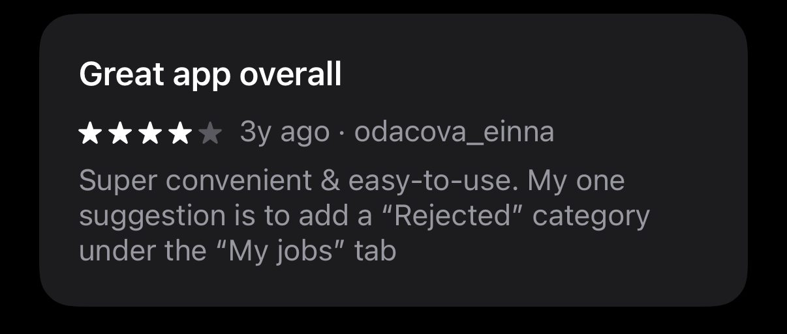
Welcome to the Jungle already has an established navigation model and visual language. Any new interaction needed to feel like a natural extension of the existing experience rather than introducing a new pattern for users to learn.
My first instinct was to capture every possible hiring outcome by introducing additional statuses such as Rejected, No Response, Interviewed No Offer, Declined Offer, and Contract Ended. While this approach successfully completed the application lifecycle, it also introduced unnecessary complexity. The growing number of statuses increased cognitive load and required users to actively maintain their tracker, ultimately working against the lightweight experience that makes Welcome to the Jungle so approachable.
Revisiting the project, I challenged whether users actually needed more statuses or simply a better way to preserve completed application cycles. That shift in thinking led me to focus on a simpler solution: extending the existing workflow rather than expanding it.
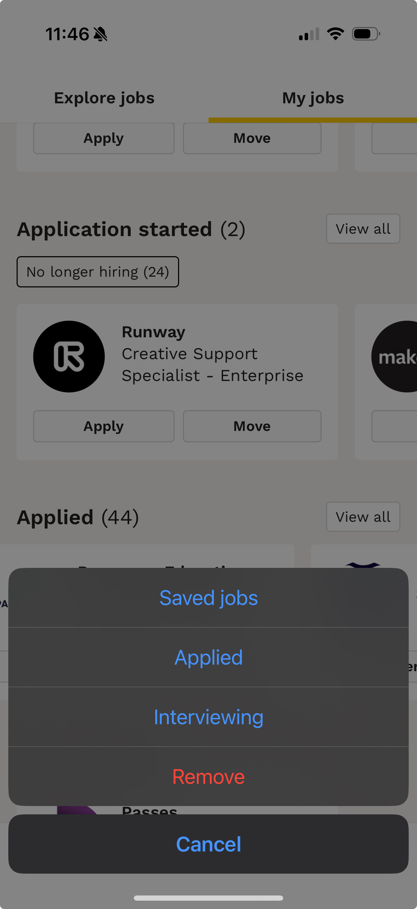
The saved option here is not needed. Since the application has started, the job is already being tracked.
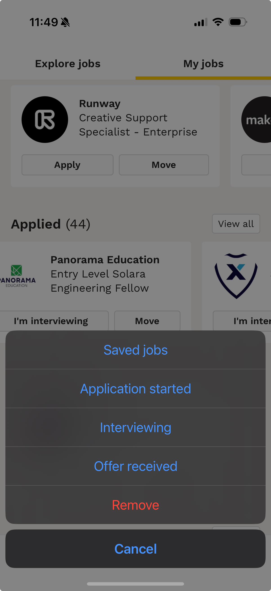
If a user has already applied to the role, saved and application started statuses are not needed. As you can see, the options are the same for both Applied and Interviewing.
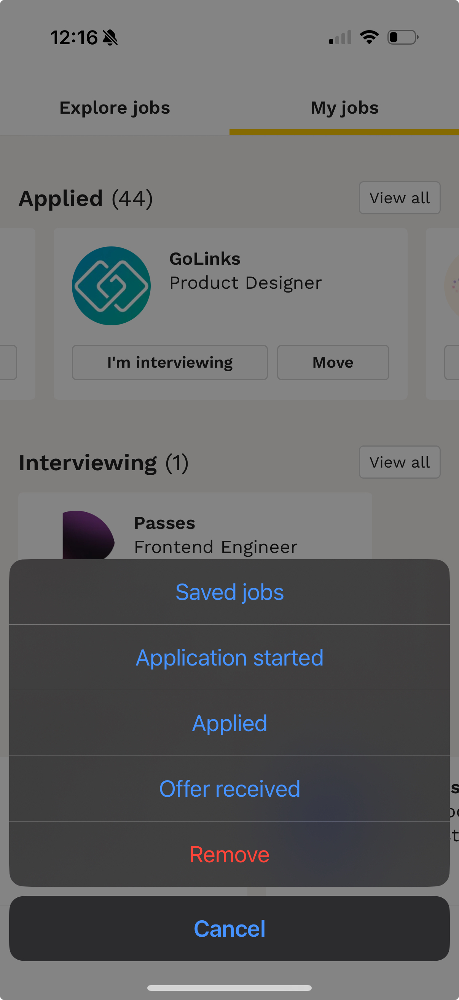
For someone who is currently interviewing, moving the status back to saved, application started or applied, simply wouldn't make sense.
The images above compare the current status flow with the proposed update. Today, selecting Move presents users with nearly the same set of options regardless of where they are in the hiring process, allowing them to move backwards just as easily as they move forward.
My redesign introduces context-aware status transitions that better reflect the natural progression of a job search. As applications advance, irrelevant options are removed and only the most logical next steps remain. I also introduced a Rejected status, giving users a simple way to preserve completed application cycles and avoid losing valuable context throughout their job search.
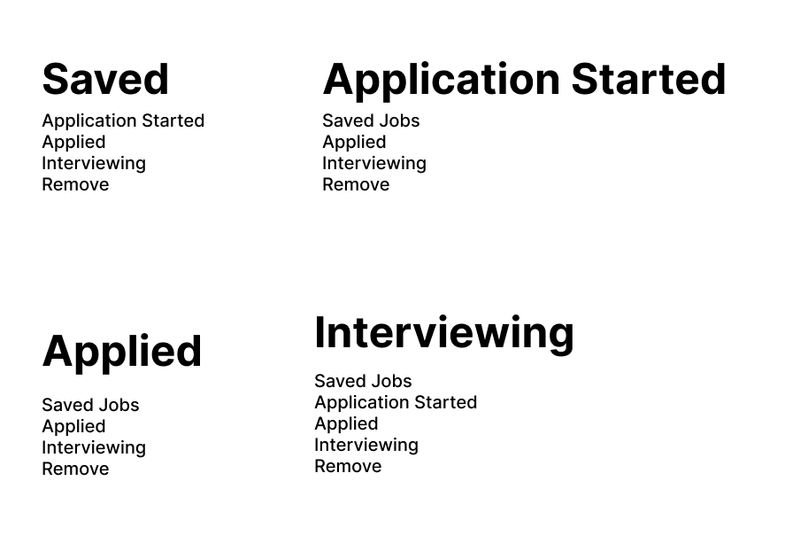
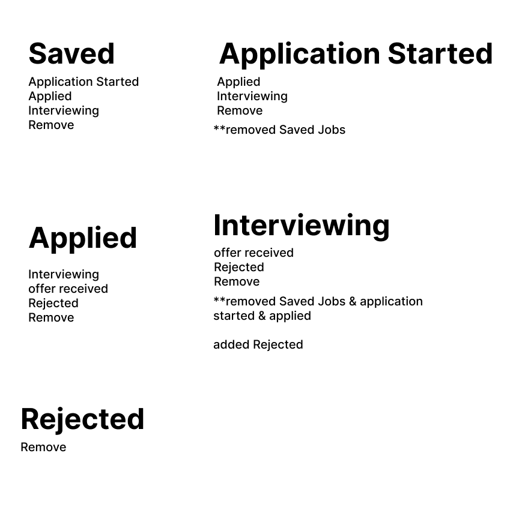
Walk through your final design. Use the blocks below to show screens with explanations. You can mix and match — use as many or as few as each project needs.
Explain the specific decision shown above — why this pattern, what you were optimizing for.
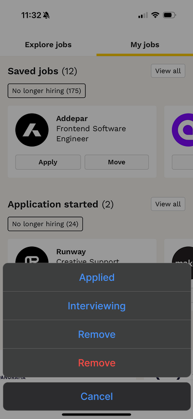
What this screen does and why it's designed this way.
What this screen does and why it's designed this way.
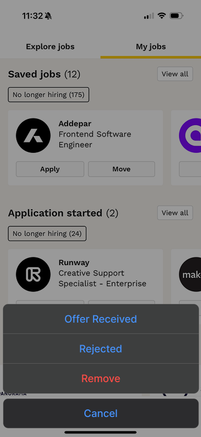
What this screen does and why it's designed this way.
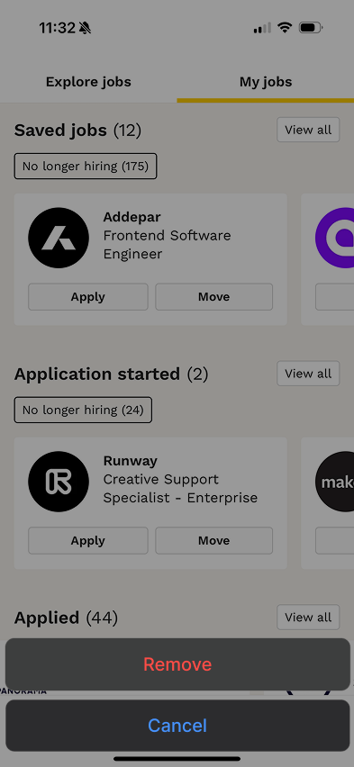
What this screen does and why it's designed this way.
After publishing this work, WTTJ reached out directly. The CEO liked my orignal post on Linkedin and the VP of Product Management reached out via email.
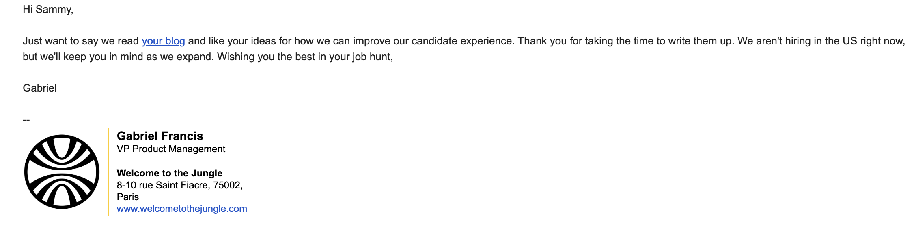
What would you do differently with more time? What would you want to test? What are you still uncertain about? Be specific and honest — this shows you'd be easy to give feedback to.
If you made a deliberate tradeoff (like the random color assignment in the Instagram project), explain the reasoning here rather than leaving it as an unexplained gap.